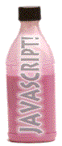

27a. JavaScript : Alerts and Rollovers
You've tasted it...
let's make alert messages...
generate mouseover messages...
good!
Objectives
After this lesson you will be able to:
- Write the JavaScript code to generate an alert message when a link is clicked
- Write the JavaScript code to display messages in the status bar when the mouse is moved over a link.
Lesson
Note: If you do not have the working documents from the previous
lessons, download a copy now.
Our first dose of JavaScript is to write a command inside a hyperlink tag to do something other than jump to a URL when it is clicked. This allows our links to do more than just transfer us to another document:
<a href="alt.html" onClick="JavaScript Statement; return false">link text</a>
NOTE:
The listed JavaScript statement will be processed when the viewer clicks the hypertext link. The onClick="..." event is triggered by a mouse click. Note the "C" must be capitalized!
The addition of the JavaScript statement return false tells the web browser to ignore the URL in the href= part of this tag. However, if the person viewing this page does not have a JavaScript enabled web browser or has JavaScript disabled, the onClick="..." code is ignored and the viewer is transferred to the URL alt.html. This enables us to support a wide range of audiences by providing an alternative HTML page to the JavaScript. if you want to verify that this works, check your web browser's Preference/Options settings and look for a checkbox where you can de-activate JavaScript (do not forget to turn it back on when you are done!). This is well worth doing as you add more JavaScript features to your pages.
The first thing we will do is to modify our terminology page of your Volcano Web project, so that the list of words in the first paragraph display an alert message defining their meaning.
- Open the term.html file in your text editor.
- Modify the first <ul>..</ul> list to read:
<li><a href="term_1.html" onClick="alert('A caldera is a circular shaped
landform depression caused by the eruption of a large, near surface
body of magma.'); return false">caldera</a>
<li><a href="term_2.html" onClick="alert('Vesicularity is a measure how much
of a rock volume consists of air chambers.'); return false">vesicularity</a>
<li><a href="term_3.html" onClick="alert('Pahoehoe is a type of basaltic lava
flow texture that comes from the Hawaiian word for smooth and
ropy.'); return false">pahoehoe</a>
<li><a href="term_4.html" onClick="alert('Rheology is the study of how
materials deform.'); return false">rheology</a>
<li><a href="term_5.html" onClick='alert("A lahar is a mudslide generated
from the flanks of a volcano. Some say it comes from the
phrase \"Look Out!\" in the Indonesian language."); return false'>lahar</a>
NOTES: We have created a JavaScript command that over-rides the hyperlink tag with an instruction to display a string of text in an "alert" box on the screen.
The JavaScript code will generate error messages if there are any RETURN characters inside the command! So each <li> line must have only one RETURN at the end of the line. If you would like to copy and paste this code, use this sample of HTML that will load in a new browser window.
If there are errors in your JavaScript code, the browser will generate error messages as it tries to interpret the code. To see how this works take the JavaScript Error test.
Look carefully at the way quote characters are used in the onClick part of the tag. The entire JavaScript command must be enclosed in a set of quotes. And the alert command itself must include another string that is in quotes. We use single quotes and double quotes for this purpose, and it does not matter which one we use:
<a href="#" onClick="alert('You are the boss!')">tell me something</a>
will act exactly like:
<a href="#" onClick='alert("You are the boss!")'>tell me something</a>
Why bother? Let's say that the message you want to display in the JavaScript triggered alert needs to contain a quote as a character. JavaScript needs to know that the quote means just a quote and not part of the JavaScript instruction. We can do this by putting the backslash (\) in front of the quote character ' -- known in techie terms as "escaping" the character, e.g. letting JavaScript know that this quote is part of the text we want to display and not marking the end of the JavaScript string.
In our example above, we want the words Look Out! in the last list item to have quotes around them. If we want these to be single quotes, we would use:
<li><a href="#" onClick="alert('A lahar
is a mudslide generated from the flanks of a volcano. Some
say it comes from the phrase \'Look Out!\' in the Indonesian
language.')">lahar</a>
but since we wanted double quotes, we swapped our uses of single and double quotes like:
<li><a href="#" onClick='alert("A lahar
is a mudslide generated from the flanks of a volcano. Some
say it comes from the phrase \"Look Out!\" in
the Indonesian language.")'>lahar</a>
Finally, we need to create 5 new (but small) HTML pages that will be used if the person viewing our page cannot use the JavaScript command.
- Open your text editor and create a new HTML document named term_1.html
- Insert the following HTML into this new file:
<!DOCTYPE HTML PUBLIC "-//W3C//DTD HTML 3.2//EN">
<html>
<head>
<title>Volcano Terminology</title>
</head>
<BODY BGCOLOR=#000000 TEXT=#FFFF00 LINK=#33CCFF VLINK=#FF6666>
<h2 align=center>
A <font color="#FF0000">caldera</font> is a circular shaped
landform depression caused by the eruption of a large, near
surface body of magma.</h2>
<center>
<a href="term.html">return</a>
</center>
</body>
</html>
- Open your text editor and create a new HTML document named term_2.html
<!DOCTYPE HTML PUBLIC "-//W3C//DTD HTML 3.2//EN">
<html>
<head>
<title>Volcano Terminology</title>
</head>
<BODY BGCOLOR=#000000 TEXT=#FFFF00 LINK=#33CCFF VLINK=#FF6666>
<h2 align=center>
<font color="#FF0000">Vesicularity</font> is a measure how
much of a rock volume consists of air chambers.
</h2>
<center>
<a href="term.html">return</a>
</center>
</body>
</html>
- Open your text editor and create a new HTML document named term_3.html
- Insert the following HTML into this new file:
<!DOCTYPE HTML PUBLIC "-//W3C//DTD HTML 3.2//EN">
<html>
<head>
<title>Volcano Terminology</title>
</head>
<BODY BGCOLOR=#000000 TEXT=#FFFF00 LINK=#33CCFF VLINK=#FF6666>
<h2 align=center>
<font color="#FF0000">Pahoehoe</font> is a type of basaltic
lava flow texture that comes from the Hawaiian word for
smooth and ropy.
</h2>
<center>
<a href="term.html">return</a>
</center>
</body>
</html>
- Open your text editor and create a new HTML document named term_4.html
- Insert the following HTML into this new file:
<!DOCTYPE HTML PUBLIC "-//W3C//DTD HTML 3.2//EN">
<html>
<head>
<title>Volcano Terminology</title>
</head>
<BODY BGCOLOR=#000000 TEXT=#FFFF00 LINK=#33CCFF VLINK=#FF6666>
<h2 align=center>
<font color="#FF0000">Rheology</font> is the study of how
materials deform.
</h2>
<center>
<a href="term.html">return</a>
</center>
</body>
</html>
- Open your text editor and create a new HTML document named term_5.html
- Insert the following HTML into this new file:
<!DOCTYPE HTML PUBLIC "-//W3C//DTD HTML 3.2//EN">
<html>
<head>
<title>Volcano Terminology</title>
</head>
<BODY BGCOLOR=#000000 TEXT=#FFFF00 LINK=#33CCFF VLINK=#FF6666>
<h2 align=center>
A <font color="#FF0000">lahar</font> is a mudslide generated
from the flanks of a volcano. Some say it comes from the phrase "Look Out!"
in the Indonesian language.
</h2>
<center>
<a href="term.html">return</a>
</center>
</body>
</html>
- Save all of these HTML files and Reload term.html in your web browser. Compare to this example of how the terminology page should appear at this point.
Some MouseOver Action!
So far we have learned how to use JavaScript to do something when the viewer clicks a hypertext link. We can add another feature to our hyperlinks to do something just when the viewer moves their mouse over the linking text (without clicking the link).
The normal behavior for this action is that the web browser displays in its status bar (the area usually at the bottom left corner of the browser window) the URL that the link leads to, like what you see if you move your mouse over, but do not click on, this link to our tutorial.
With JavaScript, we can create a custom message that is displayed instead of the link's URL, like this second link to our tutorial. Clicking either of this links will do the expected; transfer you to the web site specified in the hyperlink's URL.
The JavaScript format for adding this feature is:
<a href="xxxx.html"
onMouseOver="window.status='text of custom message';
return true">linking text</a>
The JavaScript event that triggers the custom message is onMouseOver="..." meaning the hypertext link says "when the mouse is over me, do this". There are two different JavaScript function statements here, separated by a semi-colon (;).
window.status='text of custom message';
This is the JavaScript command that says, "Display in the status bar everything between the quotes".
return true
This is a "message" that must be sent back to the browser to let it know we are done. We cannot explain why exactly this is needed, but we can tell you that it will not work unless you include this!
Now, we will add a mouseOver message to the links we modified for the terminology web page that produce the alert messages.
- Open the term.html file in your text editor.
- Modify the first <ul>..</ul> list to read:
<ul>
<li><a href="term_1.html"
onClick="alert('A caldera is a circular shaped landform
depression caused by the eruption of a large, near surface
body of magma.'); return false"
onMouseOver="window.status='what is a caldera?';
return true">caldera</a>
<li><a href="term_2.html"
onClick="alert('Vesicularity is a measure how much of a
rock volume consists of air chambers.'); return false"
onMouseOver="window.status='what is vesicularity?';
return true">vesicularity</a>
<li><a href="term_3.html"
onClick="alert('Pahoehoe is a type of basaltic lava
flow texture that comes from the Hawaiian word for
smooth and ropy.'); return false"
onMouseOver="window.status='what is pahoehoe?';
return true">pahoehoe</a>
<li><a href="term_4.html"
onClick="alert('Rheology is the study of how materials
deform.'); return false"
onMouseOver="window.status='what is rheology?';
return true">rheology</a>
<li><a href="term_5.html"
onClick='alert("A lahar is a mudslide generated from
the flanks of a volcano. Some say it comes from the
phrase \"Look Out!\" in the Indonesian language.");
return false'
onMouseOver="window.status='what is a lahar?';
return true">lahar</a>
</ul>
NOTE: If you would like to copy and paste this code, use this sample of HTML that will load in a new browser window.
- While we are adding this feature, it would help add MouseOver messages to the "hot area" of the clickable image map we created for this page in lesson 23. So modify the HTML between the <map>...</map> tags to read:
<map name="volcmap">
<area shape="rect"
href="http://volcano.und.edu/vwdocs/frequent_questions/grp7/europe/question308.html"
coords="48,46,204,153"
onMouseOver="window.status='information about surtseyan type volcanos';
return true">
<area shape="rect"
href="explode.html"
coords="0,66,26,227"
onMouseOver="window.status='description of explosiveness scale';
return true">
<area shape="rect"
href="height.html"
coords="95,283,378,309"
onMouseOver="window.status='description of height scale';
return true">
<area shape="rect"
href="http://www.geo.mtu.edu/volcanoes/pinatubo/"
coords="321,154,468,261"
onMouseOver="window.status='information about plinian type volcanos';
return true">
<area shape="rect"
href="http://stromboli.net/"
coords="172,155,318,274"
onMouseOver="window.status='information about strombolian type volcanos';
return true">
<area shape="rect"
href="http://hvo.wr.usgs.gov/volcanowatch/"
coords="36,155,168,276"
onMouseOver="window.status='information about hawaiian type volcanos';
return true">
<area shape="rect"
href="http://www.geo.mtu.edu/volcanoes/santamaria/"
coords="90,3,343,123"
onMouseOver="window.status='information about phreato-plinian type volcanos';
return true">
</map>
NOTE: If you would like to copy and paste this code, use this sample of HTML that will load in a new browser window.
If your JavaScript is working, as you move the mouse over the image on this page, the status bar will display the custom message that describe the link, rather than the URL.
NOTE: This method is not sufficiently supported on all browsers. As of April 2002, this technique of using onMouseOver inside the <map>...</map> tags does not work on Microsoft Internet Explorer web browsers (v 5.0, 5.5, 6.0 for Windows) and NetScape 6.2 (Windows); it does work for NetScape 4.x (Windows and Macintosh), Internet Explorer for Machintosh (v. 5.5), and NetScape 6.2 (Macintosh).
Using the mouseOver technique can be an effective feature of your web site, but keep in mind that sometimes it is more useful for the person looking at your site to know the URL where the link leads to (perhaps so they can guess the organization that owns the web site from its URL)-- the onMouseOver message hides this information. Use it where it makes sense for your web site design and what you can determine are the needs of the visitors to your site.
Check Your Work
Compare your web pages with this sample
of how it should appear. If your pages are different from the sample or the hypertext links do not work correctly, review the text you entered in the text editor. Note that JavaScript is very sensitive to typographical mistakes -- one missing quote or semi-colon can ruin the page!
Review
Review topics for this lesson:
- How can you make a hypertext link display an alert message rather than connecting to another web page?
- How do you write a JavaScript alert command with text that includes quote characters?
- What is a mouseOver event?
- How do you generate messages in the status bar when the viewer of a web page moves the mouse over different links?
Independent Practice
Add some JavaScript alert and mouseOver code to some of the hyperlinks in your own web pages.
Extra Credit: Can you think of a way that a mouseOver can generate an alert message?
Coming Next....
Get a second dose of web medicine from your JavaScript Pharmacy... JavaScript that creates custom content and dynamic footers.
Writing HTML: Lesson 27a: A Wee Dose of JavaScript : Alerts and Rollovers
©1994-2002
Maricopa Center for Learning and Instruction (MCLI)
Maricopa Community Colleges
Questions? Comments? Visit our feedback center
URL: http://www.mcli.dist.maricopa.edu/tut/tut27a.html

This work is licensed under a Creative Commons Attribution-NonCommercial-NoDerivs 2.5 License.